はじめてのマップ:歩き回れる部屋
空のマップから、ゲームの中で歩ける部屋まで:ブラシ、テクスチャ、caulk、ライト、プレイヤーの開始位置、最適化、進行状況ウィンドウ付きのビルド、エディター内での試し歩き、そしてゲーム用の .pk3。
このページの画像はすべて、プログラムがまさにこの手順を実行しているときに撮影したものです。セルフテストは毎回結果を確認します:部屋はリークなしでビルドでき、プレイヤーは開始位置に立って歩け、.pk3 にはマップが入っています。メニューとショートカットは NetRadiant-Custom と同じなので、ほかのマッピングのチュートリアルもそのまま使えます。ウィンドウの説明は マップエディター ページにあります。
手順#
- 1
ゲームを設定する。 モードバーで マップエディター に切り替えます。エディターはプログラムに設定されたゲームを使い、フォルダーはプログラムの設定から取ります。編集 > 設定 の ゲーム ページにゲーム、パス ページにエンジンのパス(空ならプログラムのゲームフォルダーから)が表示されます。
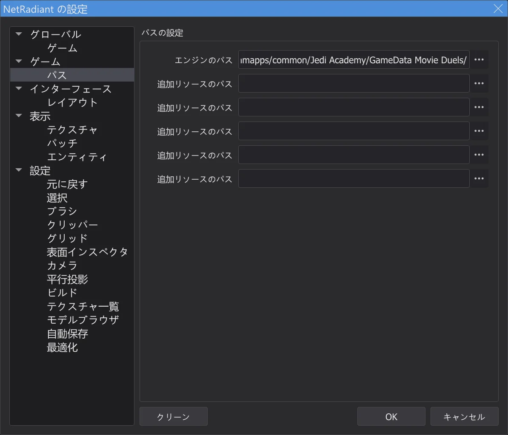
設定、パス ページ。 - 2
新しいマップ。 ファイル > 新規マップ で空のマップ(worldspawn だけ)を始めます。マウスホイールで 2D ビューを少しズームアウトします。
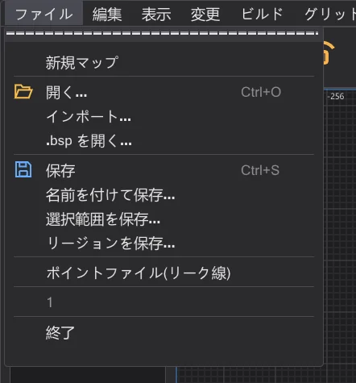
ファイル メニュー。 - 3
ブラシを描く。 2D の上面図で左ボタンを押したまま角から角へドラッグします。ここでは -256 -256 から 256 256 まで、幅 512 ユニットの箱です。高さはワークゾーンから取られます(最初は -64 から 64)。
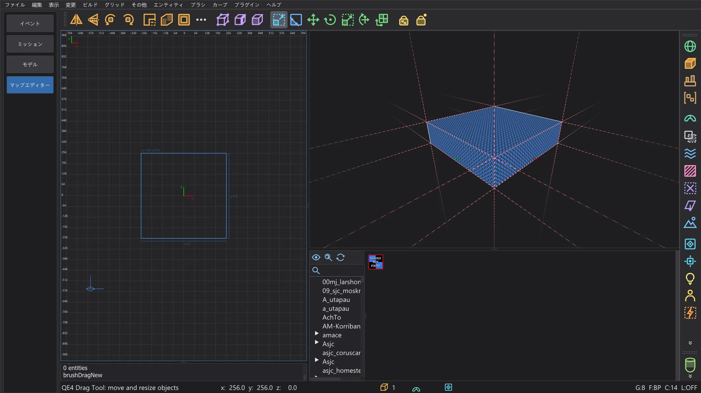
新しいブラシ(選択中、赤)。 - 4
高くする。 Num 1 で 2D ビューが正面図(XZ)になります。上の辺のすぐ上をつかんで上へドラッグすると、上の面がグリッドに沿って動きます。ここでは 192 まで。部屋の高さは 256 になりました。Num 7 で上面図に戻ります。
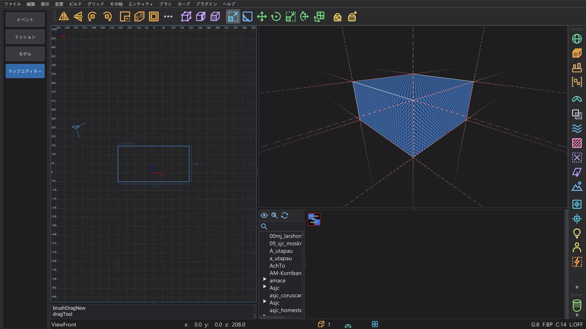
正面図:ブラシの高さは 256 になりました。 - 5
テクスチャ。 テクスチャブラウザーのツリーでフォルダーをダブルクリックし、テクスチャを左クリックすると、選択したブラシのすべての面に貼られます。壁には透けないものを選びます。
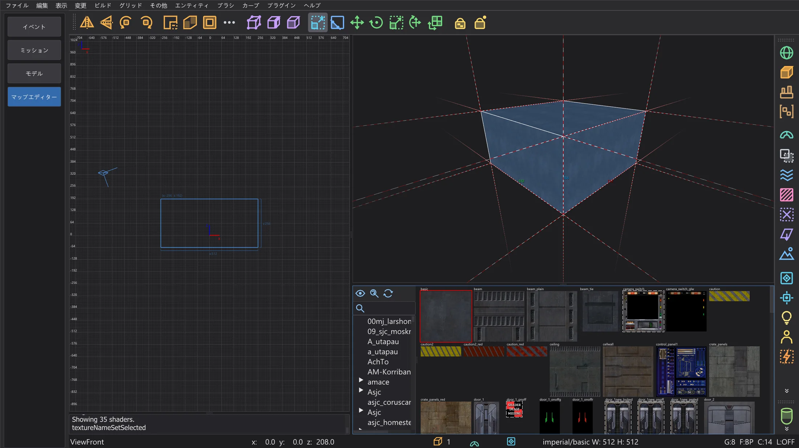
6 つの面すべてに壁のテクスチャ。 - 6
くり抜く。 ツールバーのボタン CSG ツール で CSG ツールが開きます。厚さは 16 のままにし、caulk のボタンはいったんオフにして(後で AutoCaulk が行います)、くり抜き::面を引き出し を押します。厚さ 16 の壁が 6 枚、部屋の外側に伸び、内側は描いた箱のままです。ツールバーのボタン Room(Make Room)はグリッドの大きさを厚さにして同じことをします。
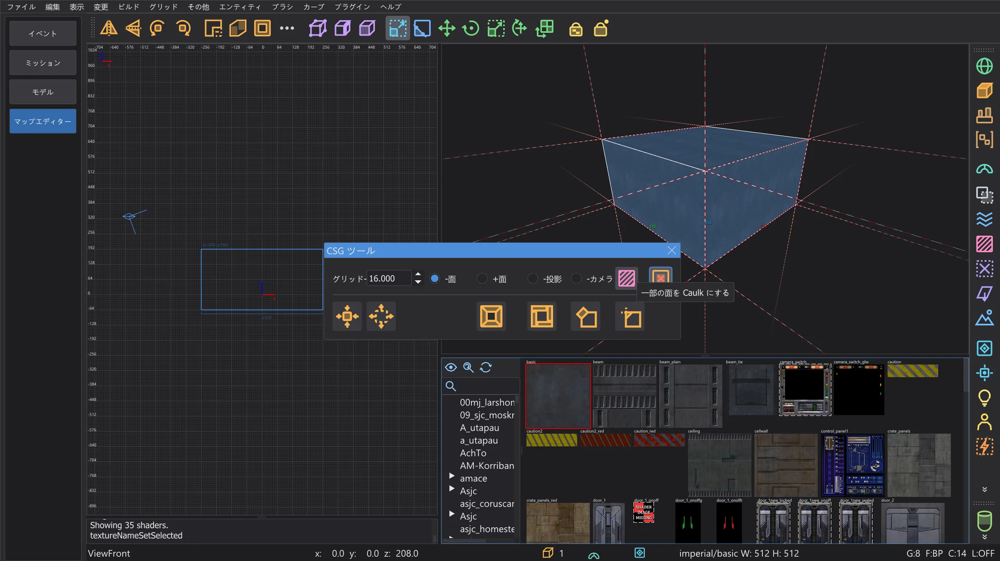
caulk ボタンをオフにした CSG ツール。 - 7
床のテクスチャ。 正面図で床を Shift + 左クリックすると床のブラシだけが選択されます。ブラウザーで床のテクスチャをクリックします。Esc で選択を解除します。
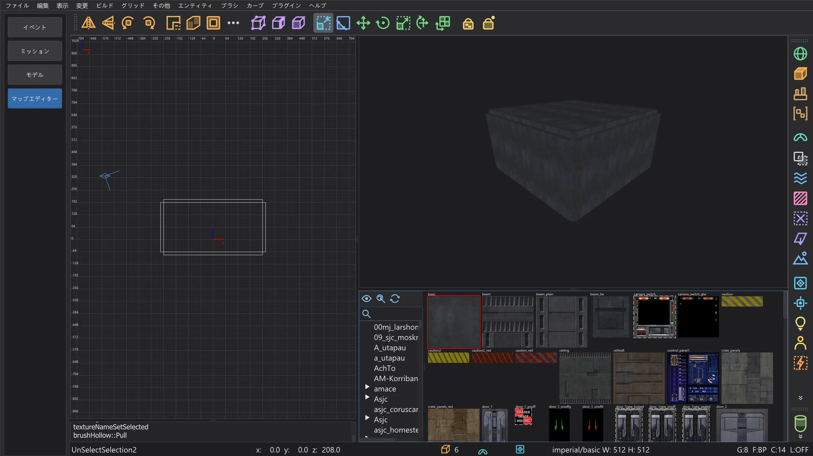
くり抜いた部屋:壁のブラシが 6 枚。 - 8
ライト。 2D ビューで部屋の中を右クリックするとエンティティメニューが開きます。light を選ぶと明るさを尋ねられます(300 がよい出発点)。OK でクリックした場所に置かれます。
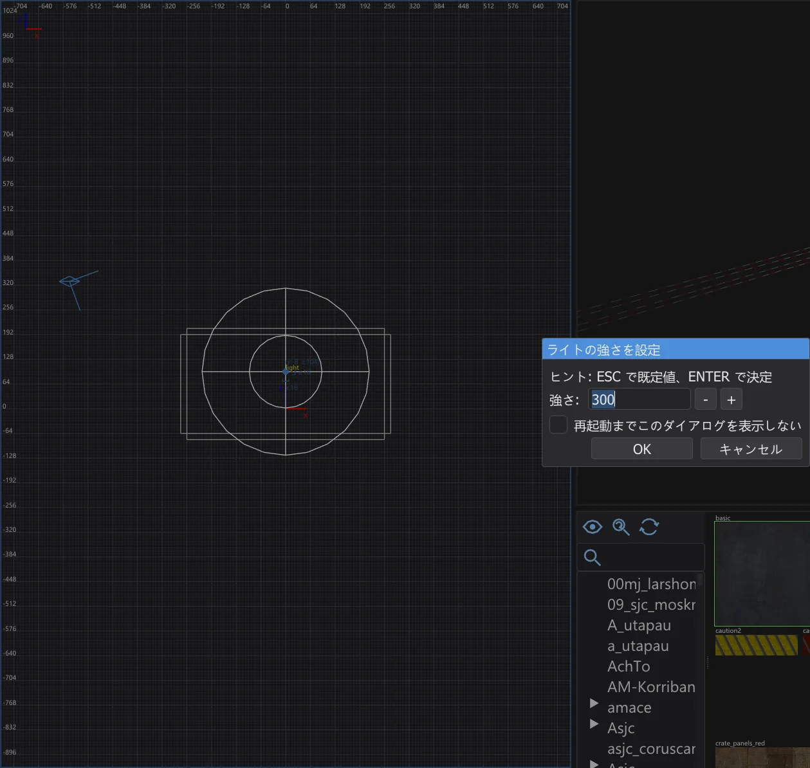
ライトの強さを設定。 - 9
プレイヤーの開始位置。 床の近くを右クリック:info > info_player_start。これがないと、ゲームはプレイヤーをどこに置けばよいか分かりません。箱は床の上に立てます。
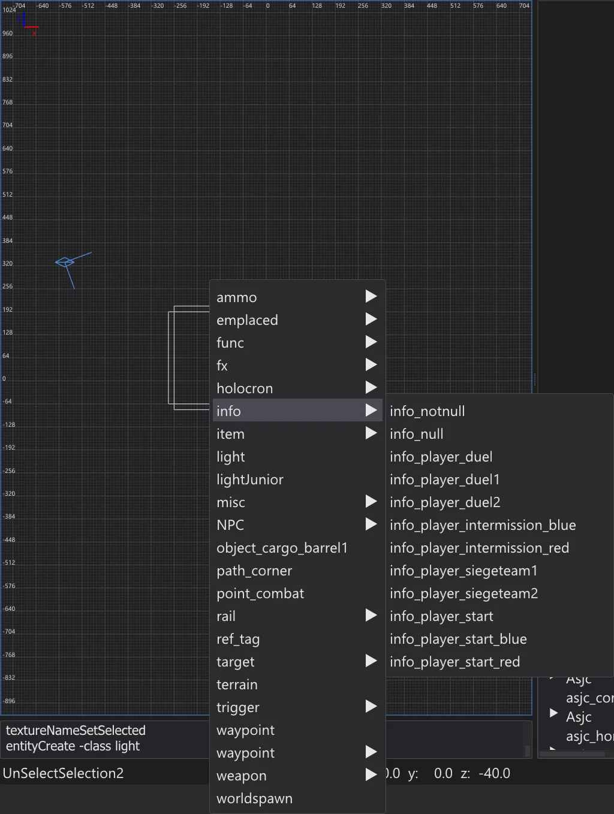
エンティティメニューのサブメニュー info。 - 10
保存する。 ファイル > 名前を付けて保存。たとえばゲームのフォルダーの外にある自分の
mapsフォルダーにmeinekarte.mapとして保存します。ファイル名がゲームでのマップ名になります。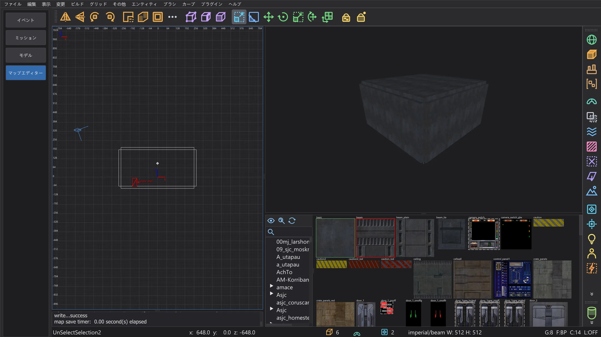
エディター内の保存した部屋。 - 11
外側を caulk にする。 誰にも見えない面でも、ライトマップの領域と描画時間を使います。カメラを部屋の中に入れ、上面図で Shift + 右ドラッグで部屋全体を四角で囲み、F4(ブラシ > 選択を自動コーク)を押すと、内側から見えない面がすべて caulk になります。最初から caulk で作る方法もあります。新しいブラシに caulk テクスチャを付け、見える面だけにテクスチャを貼ります。
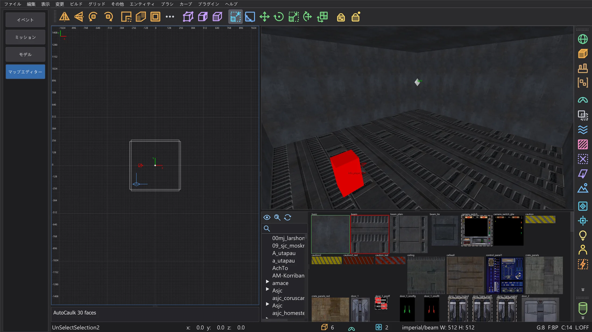
AutoCaulk の後:部屋の中のカメラ。 - 12
確認する。 ビルド > 最適化 はコンパイル前にゲームの上限を数え、ビルドの問題を探します。緑色なら直すものはありません。
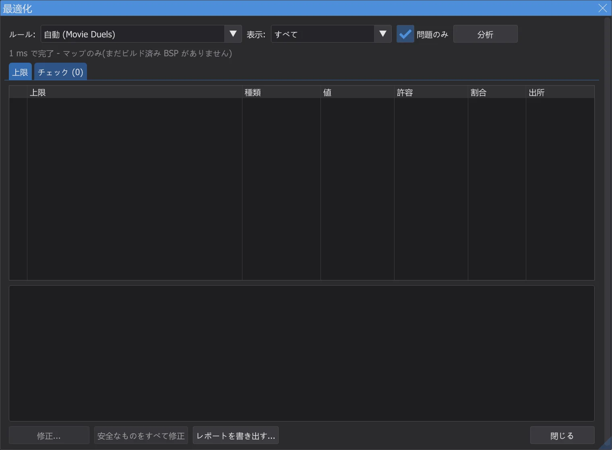
チュートリアルの部屋の最適化。 - 13
ビルドする。 ビルド > [Final] Fast は q3map2 を 3 回実行します(BSP、VIS、バウンス付きのライト)。進行状況ウィンドウに段階、進み具合、残り時間が表示されます。マップにリークがあればコンソールに赤で表示され、2D ビューの線が外への道を示します。マップエディター:マップのビルド を参照してください。
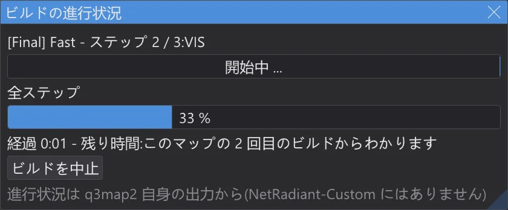
ビルド中の進行状況ウィンドウ。 - 14
歩いてみる。 表示 > プレイ:info_player_start から開始 に続いて エディター内でプレイ(F6):info_player_start に立ち、W A S D で歩き、Space でジャンプします。Esc で終了。コンパイルしなくても動きます。衝突はブラシから直接作られます(エディター内でプレイ を参照)。
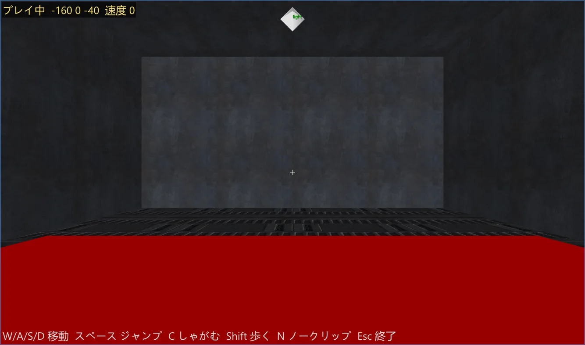
エディターで部屋の中を歩く。 - 15
ゲームに入れる。 ビルド > マップを .pk3 にまとめる は
maps/meinekarte.bspを .bsp の隣のmeinekarte.pk3にまとめます。プログラムがゲームのフォルダーに書き込むことはありません。.pk3 はご自分でGameData/base(Jedi Academy、Jedi Outcast)か MOD のフォルダー(たとえば Movie Duels)にコピーしてください。ゲームを起動し、Shift+~ でコンソールを開いてdevmap meinekarteと入力します。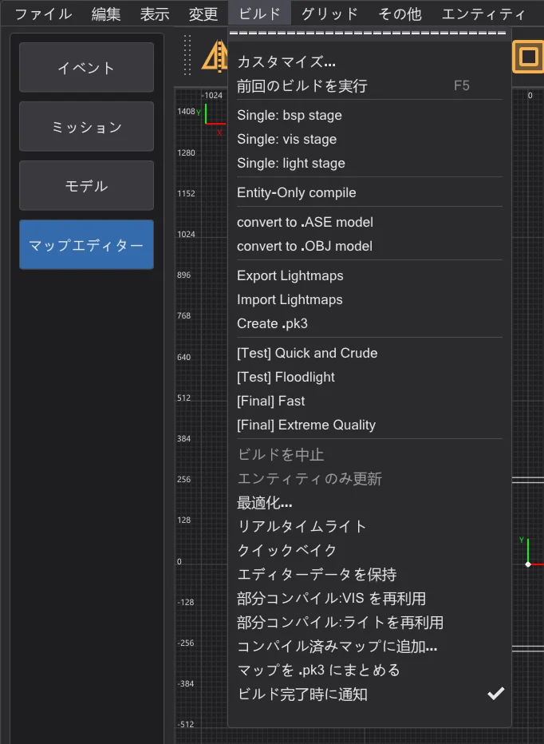
マップを .pk3 にまとめる のある ビルド(NetRadiant-Custom にはありません)。


次のステップ#
- ブラシ、クリッパー、パッチ、CSG ツール:マップエディター:作成ツール。
- Build メニュー、リーク、ポータル、ビルドフォルダー:マップエディター:マップのビルド。より速い再ビルド:マップエディター:ビルドの進行状況と部分コンパイル。
- ゲームの上限と修正:マップエディター:最適化ツールと上限。カメラでのライトのプレビュー:マップエディター:速度とリアルタイムライト。
- 地形、ロジックビュー、ミラーモード、エディター内でのプレイ:マップエディター:地形・プレイ・ロジック・ミラーなど。
- 自分のマップでカットシーンを作る:自分だけのミッション:Taspir からの離陸。